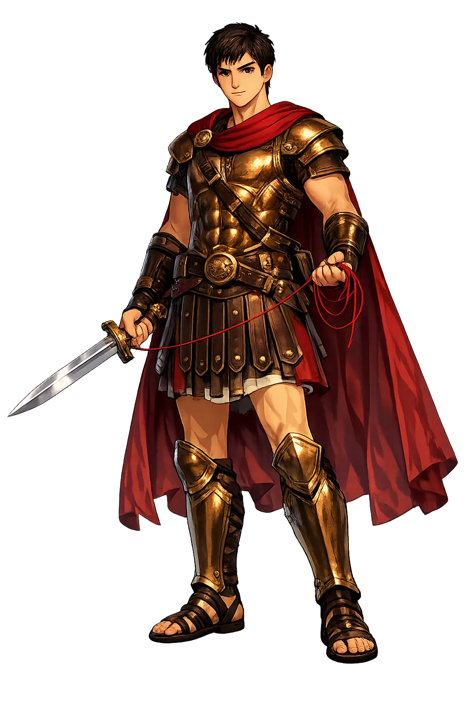

Thēseus through the eyes of sculptors, painters, and craftsmen across the ages

Mosaic depicting Theseus fighting the Minotaur from Room 42 (Mau-Overbeck 1884 plans) the House of the Labyrinth Pompeii VI 11,9-topaz-enhance Photo/art: 19th century artists working in Pompeii. Public domain via Wikimedia Commons.

Theseus and the Minotaur mosaic Room 42 (Mau-Overbeck 1884 plans) H… Photo/art: 19th century artists working in Pompeii. Public domain via Wikimedia Commons.

Treasury of Athenians, Theseus and Antiope, 500 BC, AM Delphi, 201402 — Metope from the southern side of the Treasury of Athenians at Delphi. Photo/art: Zde. CC BY-SA 4.0 via Wikimedia Commons.

Theseus and Pirithous, 1806, by Angelique Mongez — Theseus and Pirithoüs Clearing the Earth of Brigands, Deliver Two Women from the Hands of their Abductors Photo/art: Angélique Mongez. Public domain via Wikimedia Commons.

Antoinette Béfort - Theseus and Ariadne 2 — Theseus and Ariadne , painting by Antoinette Béfort, Salon of 1812 and 1814. Photo/art: Antoinette Béfort. Public domain via Wikimedia Commons.